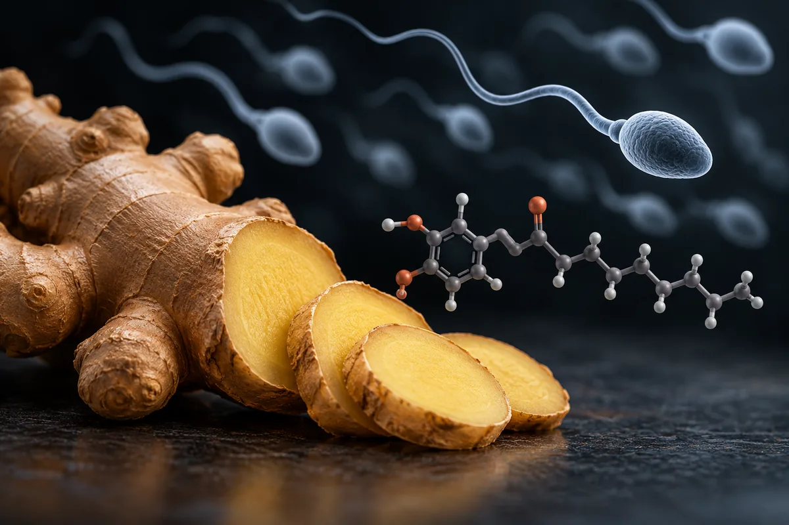

Gengibre e fertilidade masculina (Zingiber officinale)
O "LH +43%" existe, num estudo iraquiano sem placebo que não diz dose nem forma; o único ensaio com placebo, em 100 homens, não mudou contagem nem motilidade.

实验性材料。在使用这里的任何东西之前请先阅读。
本页没有任何内容属于医疗建议、处方或治疗方案。这是对研究社群中流传的方案的整理翻译，以及在存在的情况下，已发表试验所测试过的内容。两者的标记方式不同 — 它们并不等价。
这里的大部分化合物没有获得 FDA 批准用于人体。其中不少以“仅供研究使用”的标签出售，这意味着它们没有经过供人摄入的纯度、无菌或含量管控。社群描述的剂量不是被验证过的剂量：它只是某个人报告自己那样做了。
在考虑使用其中任何一种化合物之前，请先与有资质的医疗专业人员谈一谈。如果你已经在用某一种，并且感到有预期之外的情况，请去就医 — 不要等下一次常规体检。
摘要
O gengibre é tempero e fitoterápico registrado no Brasil, para enjoo e má digestão. A alegação de que ele sobe LH, FSH e testosterona vem de um estudo de 2012 de uma revista médica iraquiana, fora do PubMed: 75 homens inférteis, 3 meses de gengibre, sem grupo placebo, sem dose nem forma declaradas, e com médias diferentes no texto e na tabela. O único ensaio randomizado com placebo, iraniano, deu 250 mg de pó 2 vezes ao dia por 3 meses a 100 homens inférteis: a fragmentação do DNA do espermatozoide caiu, mas contagem e motilidade não mudaram, e os hormônios, registrados como desfecho, não aparecem no artigo. Uma revisão de 2018 conclui que o efeito na testosterona não está confirmado em humanos.
本页为什么存在
O gengibre aparece descrito em vídeos curtos sobre saúde masculina que vi publicados na internet, como um "chá caseiro" que dá "43% a mais de LH", e "uma universidade provou isso". A fonte citada é uma revista médica "de Tikrit", de 2012: 75 homens inférteis, gengibre todo dia por 3 meses, com LH +43%, testosterona +17,7% e FSH +17,6%, glutationa em alta e malondialdeído (MDA), um marcador de dano oxidativo, em queda. A explicação oferecida é que o gengibre, "antioxidante pesado", protege a célula de Leydig, a que fabrica testosterona no testículo. O próprio vídeo admite que "o estudo não fechou a forma" e sugere chá fresco como "o jeito mais simples".
Esta página nasce de um único vídeo. Desta vez a fonte citada existe e eu a li inteira. A profundidade vem dela, do ensaio controlado que veio depois e das revisões. Nenhum número desta página veio da fonte secundária do site.
Este site trata de assunto vizinho também em Pré-treino caseiro (guaraná, canela, gengibre e cafeína anidra) e Muira puama (Ptychopetalum olacoides, marapuama).
O estudo citado existe, e diz o que o vídeo diz, mas não prova o que o vídeo promete
O artigo é de Mares e Najam, da Faculdade de Medicina da Universidade de Tikrit, no Iraque: Tikrit Medical Journal, 2012, volume 18, número 2, páginas 322 a 329. Ele não está no PubMed, mas está aberto no site da revista. Li o texto inteiro, incluindo as tabelas.
Os números do vídeo estão lá. Na tabela 3, o LH foi de 3,676 para 6,475 mUI/mL (+43,2%), o FSH de 6,45 para 7,83 mUI/mL (+17,6%) e a testosterona de 9,24 para 11,026 ng/mL (+17,7%). Na tabela 2, o MDA no sangue caiu de 5,913 para 2,734 µmol/L e a glutationa subiu para 11,057 µmol/L. Na tabela 1, a contagem de espermatozoides foi de 61,85 para 73,86 milhões por mL e a motilidade de 30% para 57%.
O que o artigo não tem é o que permitiria atribuir isso ao gengibre:
- Não há grupo placebo. Os 75 homens inférteis foram comparados com eles mesmos, antes e depois. Os autores citam 25 homens férteis como controle, mas não há resultado deles nas tabelas, e eles não tomaram nada no lugar do gengibre.
- Não há dose nem forma. O método diz apenas que todos os pacientes foram tratados com gengibre por 3 meses. Não diz quanto, como, nem se era chá, pó ou extrato. O vídeo acerta ao dizer que o estudo "não fechou a forma"; erra ao recomendar chá, que o estudo não testou.
- Os números do texto e da tabela não batem. A testosterona antes do tratamento é 9,07 ± 0,72 ng/mL no texto e 9,24 ± 0,88 ng/mL na tabela 3. A glutationa antes é 8,1 ± 1,3 µmol/L no texto e 6,61 ± 0,55 µmol/L na tabela 2.
- Os percentuais dos hormônios são calculados de um jeito incomum. O +43,2%, o +17,6% e o +17,7% só batem dividindo a diferença pela média depois do tratamento, não pela de antes; no caso da testosterona, só batem com a média de antes do texto, não com a da tabela. O de MDA bate com a média de antes. Não publico número refeito; só conferi de onde saem os publicados.
- A estatística é a errada para o desenho. O artigo diz que usou teste t para amostras independentes, quando as medidas de antes e depois são das mesmas pessoas.
- Nenhuma revisão sistemática o encontrou. A revisão de Banihani (2018) sobre gengibre e testosterona, que buscou no PubMed, no Scopus e na Web of Science, diz que todos os estudos que ligam gengibre e testosterona foram em animais, e que "nenhum estudo humano" foi feito nesse contexto.
到底有多少证据
Os números abaixo foram levantados por mim em 16 de outubro de 2026, no PubMed e no ClinicalTrials.gov. A consulta de cada linha está ao lado do número, para qualquer pessoa repetir e me contradizer.
| 基础 | 检索式 | 结果 |
|---|---|---|
| PubMed | (ginger[tiab] OR "Zingiber officinale"[tiab] OR gingerol*[tiab] OR shogaol*[tiab]) | 7.405 artigos |
| PubMed | (ginger[tiab] OR "Zingiber officinale"[tiab] OR gingerol*[tiab] OR shogaol*[tiab]) AND (Randomized Controlled Trial[Publication Type] OR Meta-Analysis[Publication Type]) | 364 artigos |
| PubMed | (ginger[tiab] OR "Zingiber officinale"[tiab] OR gingerol*[tiab] OR shogaol*[tiab]) AND (testosterone OR androgen* OR LH OR "luteinizing hormone") | 81 artigos |
| PubMed | (ginger[tiab] OR "Zingiber officinale"[tiab] OR gingerol*[tiab] OR shogaol*[tiab]) AND (testosterone OR sperm* OR semen OR "male infertility") AND (Randomized Controlled Trial[Publication Type] OR Clinical Trial[Publication Type] OR Meta-Analysis[Publication Type]) | 3 artigos |
| PubMed | (ginger[ti] OR Zingiber[ti]) AND (sperm*[ti] OR semen[ti] OR infertil*[ti] OR testosterone[ti]) | 25 artigos |
| PubMed | (ginger[ti] OR Zingiber[ti]) AND (sperm*[ti] OR semen[ti] OR infertil*[ti] OR testosterone[ti]) AND (humans[MeSH Terms]) | 7 artigos |
| PubMed | (Mares[Author] OR Najam[Author]) AND ginger | 0 篇文章 |
| ClinicalTrials.gov | intervenção: ginger OR Zingiber | 235 estudos registrados |
| ClinicalTrials.gov | intervenção: (ginger OR Zingiber) AND AREA[Phase]PHASE3 | 18 ensaios de fase 3 |
| ClinicalTrials.gov | intervenção: (ginger OR Zingiber) AND AREA[ConditionSearch](infertility OR sperm OR hypogonadism OR testosterone) | 2 estudos registrados |
对这些数字的诚实解读
- O gengibre tem muito ensaio, mas não deste assunto. Os 364 ensaios e meta-análises são, em boa parte, de enjoo, dor e digestão. Contagem de artigo mede atenção acadêmica, não evidência de desfecho.
- Os 3 "ensaios" de testosterona ou esperma não são de homens tomando gengibre. Um é de suco de beterraba, melancia e gengibre em mulheres em fertilização in vitro; os outros dois são de emplastro chinês em ponto de acupuntura, que entram na busca pela palavra semen do nome latino de uma semente de mostarda (semen brassicae) usada na fórmula. O ensaio iraniano de 2016, que é o que importa, não está marcado como ensaio clínico no PubMed.
- Dos 25 artigos com gengibre e esperma ou testosterona no título, a maioria é de rato, galo, carneiro e touro. Com o descritor "humanos", sobram 7: o suco em mulheres em fertilização in vitro, as duas revisões de Banihani, uma revisão de 2021 que mistura animais e humanos, um teste in vitro com esperma humano e dois textos de 1991 e 2008 sobre gengibre na gravidez. O ensaio de 2016 não aparece nessa busca.
- O estudo citado no vídeo não está no PubMed. A busca pelos autores devolve zero.
- Dos 2 registros no ClinicalTrials.gov sobre fertilidade masculina, um é o ensaio iraniano (NCT02032251) e o outro é uma mistura de oito plantas, de braço único, marcada como fase 3, com 1 participante registrado como inscrito. Registro não é resultado.
Os estudos que sustentam o que se sabe
Leia o que cada um mediu, em quantos, e com que controle.
| 研究 | N | 背景 | 它报告了什么 | 保留 |
|---|---|---|---|---|
| Mares e Najam, 2012 Tikrit Med J 18(2):322-329 · não indexado no PubMed | 75 | Homens inférteis de 19 a 40 anos, Tikrit e Kirkuk (Iraque), 2011–2012; gengibre por 3 meses | LH +43,2%, FSH +17,6%, testosterona +17,7%; MDA −53,7%; glutationa em alta; contagem +16,2%, motilidade +47,3% | Sem placebo; sem dose nem forma; médias divergentes entre texto e tabela; teste estatístico inadequado |
| Hosseini et al., 2016 Int J Reprod Biomed 14(8):533-40 · PMID 27679829 | 100 sorteados; 3 saídas em cada grupo | Homens inférteis no Instituto Royan (Teerã); 250 mg de pó de gengibre 2×/dia ou placebo, 3 meses, duplo-cego | Fragmentação do DNA do espermatozoide: 17,77% com gengibre contra 40,54% com placebo (p = 0,02); contagem, concentração e motilidade sem diferença; nenhum efeito colateral | Registro NCT02032251, feito em 2014, depois do fim do estudo (2010), com 71 inscritos e "hormônios masculinos" como desfecho secundário; o artigo relata 100 e não traz hormônios depois do tratamento |
| Banihani, 2018 (revisão) Biomolecules 8(4):119 · PMID 30360442 | — | Revisão sistemática de gengibre e testosterona, 1991–2018 | Em animais, o gengibre aumentou a testosterona, sobretudo sob estresse oxidativo; "o efeito do gengibre na testosterona ainda não está confirmado em humanos" | Não incluiu o estudo de Tikrit |
| Banihani, 2019 (revisão) Andrologia 51(6):e13296 · PMID 31012134 | — | Revisão de gengibre e qualidade do sêmen | Evidência "sólida" de melhora do sêmen, quase toda animal; os efeitos "requerem confirmação adicional em homens" | Mesmo autor |
| Gholami-Ahangaran et al., 2021 (revisão) Vet Med Sci 7(5):1959-1969 · PMID 34191404 | — | Revisão em animais de laboratório, aves e humanos | Melhora de parâmetros do sêmen nas espécies estudadas | Pede ensaios clínicos de segurança e dose |
Doses usadas em estudos e em documentos oficiais
Isto não é recomendação de dose: é o registro do que foi administrado em estudos publicados ou do que um documento oficial prevê, com a finalidade de cada um. Fora desse contexto, os números não se transferem.
| 来源 | 剂量 | 持续时间 | Finalidade |
|---|---|---|---|
| Mares e Najam, 2012 | Não informada; forma não informada | 3 meses | Hormônios e sêmen em homens inférteis |
| Hosseini et al., 2016 | 250 mg de pó de gengibre 2×/dia | 3 meses | Fragmentação do DNA do espermatozoide |
| Formulário de Fitoterápicos da Farmacopeia Brasileira, 2ª edição | Infusão de 0,5 a 2 g de rizoma, 2 a 4 vezes ao dia; ou 0,3 a 3 g, 3 a 4 vezes ao dia; cápsula de 250 a 750 mg de rizoma em pó | 不适用 | Enjoo de movimento e queixas digestivas leves |
| — | Extrato com 16 a 32 mg de gingeróis/dia (adulto); ou 1 a 2 g/dia de rizoma em pó | 不适用 | Enjoo de movimento e pós-cirúrgico; enjoo da gravidez |
O mecanismo é antioxidante, e foi visto em rato
A ideia de que o gengibre protege o testículo do estresse oxidativo tem base em animais. Segundo a revisão de Banihani (2018), os estudos em animais propõem vários caminhos: aumento do LH, mais colesterol disponível no testículo, menos peroxidação de gordura, mais enzimas antioxidantes, glicemia normalizada, mais fluxo de sangue e testículo mais pesado. A mesma revisão registra que tudo isso vem de estudos in vivo em animais. Dos 25 artigos com gengibre e esperma ou testosterona no título, vários testam o gengibre como proteção contra uma agressão química dada de propósito ao rato (quimioterápico, chumbo, fungicida, álcool). Que o mesmo valha para um homem infértil sem essa agressão é o salto que falta testar.
No único ensaio controlado em homens, o achado foi antioxidante, de fato: menos fragmentação do DNA do espermatozoide. Mas o que o vídeo vende, hormônio e contagem, não apareceu: contagem e motilidade não mudaram, e os hormônios medidos no início não foram publicados no fim.
Das 11 alegações, 2 se confirmam: a de que o estudo existe e a de que ele não diz a forma
Cada linha é uma alegação como ela circula, sem o nome de quem a fez. O veredito usa seis rótulos: confirmado, parcialmente, não sustentado, sem estudo em humanos, estudo em animal ou in vitro e número não encontrado na fonte citada.
| O que se diz | O que os estudos mostram | 结论 |
|---|---|---|
| "T-Crit Medical Journal", 2012, 75 homens inférteis, gengibre por 3 meses | É o Tikrit Medical Journal, 2012;18(2):322-329, 75 homens inférteis, 3 meses (Mares e Najam). "Todo dia" não está escrito no artigo | Confirmado |
| 43% a mais de LH "só com um chá caseiro" | O +43,2% está na tabela 3; o estudo não diz que foi chá, nem a dose; sem placebo | Parcialmente |
| "Uma universidade provou isso" | Estudo antes e depois, sem placebo, sem dose, com inconsistências entre texto e tabela; não indexado; não incluído em revisão sistemática | Não sustentado |
| Testosterona +17,7% e FSH +17,6% | Os números estão na tabela 3, calculados sobre a média de depois; a testosterona de antes difere entre texto e tabela | Parcialmente |
| O LH sobe, "o comando na fonte", e o corpo produz mais sozinho | Revisão de 2018: efeito na testosterona "não confirmado em humanos"; o ensaio controlado registrou hormônios como desfecho e não os publicou | Não sustentado |
| O gengibre, "antioxidante pesado", protege a célula de Leydig | Proteção do testículo vista em ratos agredidos com toxinas (revisões de 2018 e 2021); em homens, o ensaio de 2016 viu menos dano ao DNA do espermatozoide, não à célula de Leydig | Estudo em animal ou in vitro |
| No mesmo estudo, glutationa subiu e MDA despencou | Está nas tabelas (MDA −53,7%); a glutationa de antes difere entre texto (8,1) e tabela (6,61) | Parcialmente |
| "O estudo não fechou a forma; foi gengibre diário por três meses, sem mais detalhe" | Correto: o artigo não diz forma nem dose | Confirmado |
| Chá fresco é o jeito mais simples de repetir o efeito | Nenhum estudo testou chá de gengibre em fertilidade masculina; o ensaio controlado usou cápsula de pó | Sem estudo em humanos |
| Gengibre melhora a fertilidade do homem infértil (implícito) | Em 100 homens com placebo, contagem e motilidade não mudaram; a fragmentação do DNA caiu (Hosseini 2016); nenhum desfecho de gravidez | Parcialmente |
| Com o "protocolo de suplementação", testosterona +147% em menos de 28 dias | Nenhuma fonte citada; nenhum estudo de gengibre com esse número | Número não encontrado na fonte citada |
Placar: 2 confirmadas, 4 parcialmente, 2 não sustentadas, 1 só em animal, 1 sem estudo em humanos e 1 com número não encontrado.
Segurança e quem não deve usar
- Contraindicações oficiais no Brasil. O Formulário de Fitoterápicos da Farmacopeia Brasileira, 2ª edição, diz que o uso é contraindicado para quem tem cálculo biliar, irritação gástrica e hipertensão arterial; que não se deve usar junto com anticoagulantes; que o uso é contraindicado na gestação, porque o gengibre inibe a enzima tromboxano sintetase e poderia afetar a ação da testosterona no feto, e também na lactação; e que tintura e alcoolatura são especialmente contraindicadas para gestantes, lactantes, alcoolistas e diabéticos, pelo álcool. O mesmo texto registra que o gengibre pode interferir na coagulação e que doses muito altas podem causar arritmia e depressão do sistema nervoso central.
- Os documentos oficiais não concordam sobre a gravidez. A lista de registro simplificado de 2014, hoje revogada, previa pó de gengibre para enjoo da gravidez; o Formulário de 2021 contraindica o uso na gestação, citando a mesma carta de 1991 sobre a testosterona do feto (Backon 1991). Para a página, o que importa é o homem; registro a divergência porque o mesmo argumento hormonal aparece nos dois lados.
- No ensaio de 2016, os autores relatam que nenhum efeito colateral foi observado nos dois grupos, em 3 meses de 500 mg/dia de pó.
- Infertilidade é diagnóstico, não sintoma. Os 75 homens do estudo iraquiano foram questionados sobre varicocele, caxumba, doença venérea e remédios, e passaram por exame clínico antes de entrar. Quem tenta engravidar há um ano ou mais deve investigar a causa; esta é uma inferência minha, não um dado dos estudos.
- Quem não deve usar dose de suplemento: pelo Formulário, quem tem cálculo na vesícula, irritação gástrica ou hipertensão, quem usa anticoagulante, gestantes e lactantes. Como tempero, nas quantidades de comida, não achei restrição.
监管状态
- Brasil, listas oficiais: o gengibre está na Renisus (2009, espécie nº 71) e tem monografia no Formulário de Fitoterápicos da Farmacopeia Brasileira, 2ª edição. Estava na lista de registro simplificado de 2014 (IN 2/2014), que foi revogada pela IN 412/2025; a lista nova, com 5 espécies, não inclui o gengibre, e os produtos registrados antes estão dispensados de se adequar (art. 3º da IN 412).
- Brasil, suplemento alimentar: o gengibre não consta do Anexo I da IN 28/2018, na versão consolidada com alterações até a IN 470, de 16 de setembro de 2026. Como alimento e tempero, é vendido normalmente; NÃO VERIFIQUEI a norma de especiarias e chás.
- Estados Unidos e União Europeia: NÃO VERIFIQUEI. O Formulário brasileiro cita uma monografia europeia de 2012 sobre o rizoma; não a li.
- WADA: o gengibre não aparece na Lista Proibida de 2026.
| 活性成分 | 检索的模式 | 有效注册 | 标示的治疗学类别 | 产品 |
|---|---|---|---|---|
| Zingiber officinale (gengibre) | zingiber|gengibre | 3 | Fitoterápico (classe não informada nos ativos); um inativo como antiemético | Dois fitoterápicos simples de gengibre e um composto com guaraná, Trichilia e Croton; outros 6 registros inativos |
Registro de fitoterápico para enjoo não autoriza prometer testosterona nem fertilidade.
这次梳理没有做什么
- Li por inteiro o estudo de Tikrit, o ensaio de 2016 e a revisão de 2018; das outras revisões, li resumos. O estudo de Tikrit é uma digitalização: conferi as tabelas e os números do texto na imagem das páginas.
- Não sei a dose nem a forma usadas no estudo de Tikrit; o artigo não informa.
- Não localizei a fonte do "+147% em 28 dias".
- Não li a monografia europeia do gengibre e não conferi a situação nos Estados Unidos e na União Europeia.
- Não avaliei interações em base de interações; a advertência sobre anticoagulantes vem do Formulário brasileiro.
- Não avaliei o gengibre em enjoo, dor ou digestão, que são as indicações com mais ensaios.
参考文献
- Mares WAK, Najam WS. The effect of Ginger on semen parameters and serum FSH, LH & testosterone of infertile men. Tikrit Med J. 2012;18(2):322-329 (não indexado no PubMed; lido no site da revista) — a fonte do "LH +43%": 75 homens, sem placebo, sem dose nem forma.
- Hosseini J, Mardi Mamaghani A, Hosseinifar H, et al. The influence of ginger (Zingiber officinale) on human sperm quality and DNA fragmentation: A double-blind randomized clinical trial. Int J Reprod Biomed. 2016;14(8):533-40. PMID 27679829 — o único ensaio com placebo: menos fragmentação do DNA, sem mudança em contagem e motilidade.
- Registro NCT02032251 no ClinicalTrials.gov — o ensaio de 2016, registrado em 2014, com 71 inscritos e "hormônios masculinos" como desfecho secundário.
- Banihani SA. Ginger and Testosterone. Biomolecules. 2018;8(4):119. doi:10.3390/biom8040119. PMID 30360442 — efeito na testosterona "não confirmado em humanos"; todos os estudos eram em animais.
- Banihani SA. Effect of ginger (Zingiber officinale) on semen quality. Andrologia. 2019;51(6):e13296. PMID 31012134 — melhora do sêmen quase toda animal; pede confirmação em homens.
- Gholami-Ahangaran M, Karimi-Dehkordi M, Akbari Javar A, et al. A systematic review on the effect of Ginger (Zingiber officinale) on improvement of biological and fertility indices of sperm in laboratory animals, poultry and humans. Vet Med Sci. 2021;7(5):1959-1969. PMID 34191404 — revisão que mistura espécies e pede ensaios de segurança e dose.
- Halpern G, Braga DPAF, Morishima C, et al. Beetroot, watermelon and ginger juice supplementation may increase the clinical outcomes of Intracytoplasmic Sperm Injection cycles. JBRA Assist Reprod. 2023;27(3):490-495. PMID 37459441 — o "ensaio" de gengibre e esperma da busca é de suco em mulheres.
- Backon J. Ginger in preventing nausea and vomiting of pregnancy; a caveat due to its thromboxane synthetase activity and effect on testosterone binding. Eur J Obstet Gynecol Reprod Biol. 1991;42(2):163-4. PMID 1765212 — a carta citada pelo Formulário para contraindicar o uso na gestação.
- Ministério da Saúde. Relação Nacional de Plantas Medicinais de Interesse ao SUS (Renisus), 2009 — Zingiber officinale é a espécie nº 71.
- Lista Proibida da WADA de 2026 (cópia mantida pela Universidade do Esporte de Colônia) — o gengibre não aparece.
- PubMed 的 E-utilities（esearch）— 本页所有文章计数的来源。
- ClinicalTrials.gov 的公开 API，第 2 版 — 本页所有研究计数和 3 期计数的来源。